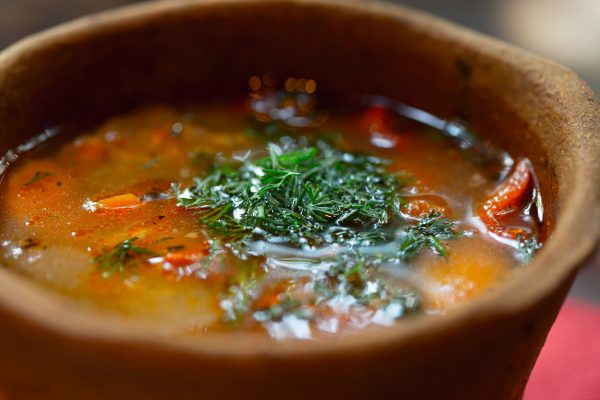

Ciorba

Description
In Romania we say that we can’t let our stomachs go dry, so we have to eat soup. I grew up eating soup almost every day of the week. This Romanian vegetable soup recipe is a simple recipe that you can put together in about half an hour, which makes a great option for lunch. This is a very popular soup eaten during the Easter or Christmas fasting period as well, when many religious people won’t eat meat.
This is a light soup that doesn’t have many calories. Is a great choice for a summer lunch, or as a light appetiser before a hearty dinner.
Ingredients
- 3 yellow onion
- 1 stalk of celery
- 2 carrot
- 1 medium parsnip
- 2 tbsp extra virgin olive oil
- 13 cups water
- 2 russet potato
- 1 can of diced tomatoes
- 1 small zucchini
- 1 cup green beans
- 1 bunch of parsley
- juice of one lemon or to taste
- salt and pepper to taste
Steps
- Dice all the vegetables.
- In a large stockpot, cook the onions, celery, carrot, and parsnip in the extra virgin olive oil until the onions become translucent, about 5 minutes.
- Add your water and potatoes to the pot, season with salt, and bring to a boil, cooking for about 25 minutes.
- Once the potatoes have softened, add the tomatoes, zucchini, and green beans, continuing to cook for another 15 minutes.
- Add in lemon juice, salt and pepper to taste. Top with the parsley and serve with a crusty bread, or my flatbread recipe. Se bucura/enjoy!